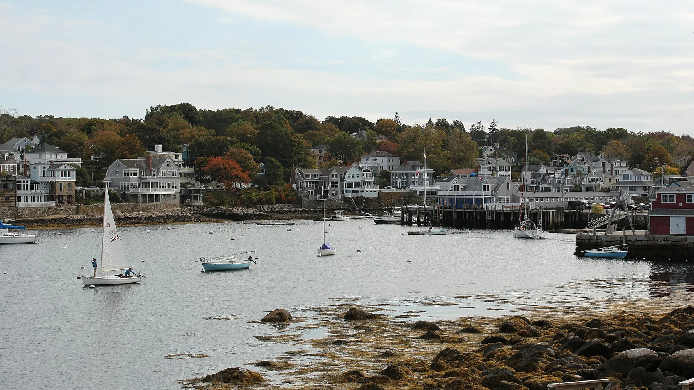

Restaurants
Over thirty local spots, sorted by how far you'll have to walk — from the bakery around the corner to oceanfront tables and our picks for a romantic dinner.
Browse restaurants
Winthrop, Massachusetts
This site is created to help our guests find the information they need during their stay with us.
Where to eat Getting into BostonStart here
Four short guides, written from living here — the good coffee, the fastest way downtown, and the walks worth waking up early for.
Over thirty local spots, sorted by how far you'll have to walk — from the bakery around the corner to oceanfront tables and our picks for a romantic dinner.
Browse restaurantsDowntown Boston is a breeze from here. Three routes — park & subway, the classic bus & Blue Line, or the seasonal ferry — with fares and timings.
Plan your tripSix beaches, the Deer Island loop, whale watching out of Gloucester, Salem in October, and car-free Sundays on Newbury Street.
See what's nearbyOur 1906 Victorian, how Pullen Point became Winthrop, and a tour of the town's micro-neighborhoods.
Read the history
Go further
Explore whale watching in Gloucester, artists and ocean views in Rockport, Halloween in Salem, Crane Beach, historic houses, and other memorable destinations within an easy drive of Winthrop.
Reviews
Such a beautiful place and was so peaceful! Guest review
Lovely views, beach within a stone's throw — what more can you ask for? Guest review
Unbeatable view with no visual obstruction of the ocean. Guest review
The beach view from the property was breathtaking! The space was clean, cozy, and exactly as described. Guest review